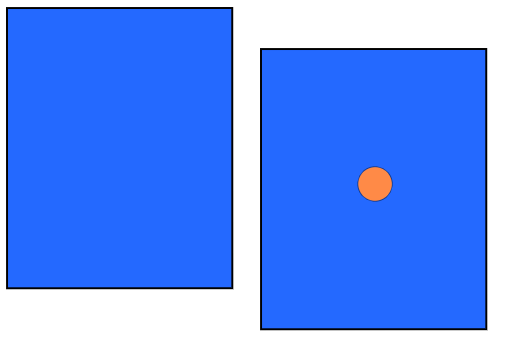

Sometimes, we only notice humor when it’s unambiguous and most of our emotional state—like when we’re laughing at a movie:
Emma and Owen are watching Fired Fireman.
Chief is hired to work at a warehouse, but his attempt to move crates of lobsters goes horribly, horribly wrong. Emma and Owen laugh.(←just humor)
Even though we sometimes seem to feel “one” emotion, most emotions happen in a mix—like when Jennifer feels humor and anger in her emotional state:
Jennifer looks up from her tablet. Where’s Riley? Her heart sinks in fear. She checks the street, then runs around the house. She sees Riley squatting quietly next to an anthill, and Jennifer puts a hand over her heart and laughs.(←humor)
Jennifer:(relieved)(annoyed)“Riley! Thank god. I thought I told you to stay the side yard.”(←Jennifer feels humor and anger)
Above, Jennifer isn’t feeling humor and anger in equal proportions—instead, she feels a lot of humor and a small amount of anger in her emotional state.
We can see this in other examples as well:
Trevor walks into class and trips, and the cereal he’s carrying falls down his shirt.
At first shocked, his classmates see that he’s not hurt and start to laugh with relief.
Trevor stands there, embarrassed, and laughs sheepishly. Red-faced, he goes to heads to the bathroom.(←Trevor feels humor and embarassment)
Riley is bored at the dinner table, and Sam makes a funny face at her. Riley smiles and squirms with amusement and boredom.(←Riley feels humor and boredom)
In complicated emotional states, small amounts of humor mingle with more prominent feelings of bitterness, disappointment, sadness, and so on:
Emma sadly shuts the door to her apartment.
Emma:“I can’t believe Sara didn’t tell me until today that she decided to move!”
She looks around. She feels angry, resentful, regretful, sad. A cloud of bitter humor passes through her.(←Emma’s complicated emotional state includes some humor)“It sucks.”
She lays across her bed, wishing she could turn off her mind.
Timothy:*calling Jennifer*“Jennifer, I know Sam said otherwise, but I checked with the insurance company. They said the treatment is still experimental. They won’t cover it.”
Jennifer:*pause*(exhausted)*laughs*(←Jennifer’s complicated emotional state includes some humor, and other emotions besides)“That’s what I thought. If we hold a fundraiser, I think we should still be able to cover it.”
Jennifer is helping her father pack up his house in preparation for his move into a nursing home. When they come across some mementos in an old box, he gives a funny smile as he touches them, and he gives an unusual laugh. He wipes his eyes.(←Jennifer’s father has complicated emotional state that includes some humor, and other emotions besides)
Most of the humor we feel in our lives isn’t big, simple moments of humor—instead, most of the humor we feel is just small twinges of humor, often as part of more complicated emotional moments.
In this book, we'll be as interested in these small or complicated moments of humor—noticing and understanding them—as we are the big or simple moments of humor.
Consider:
Small amounts of humor matter to how we describe our emotional state. This is like how an all-blue panel is very different than a similar panel with an orange dot in the middle:

We wouldn't accept someone insisting these were exactly the same, simply because both are mostly blue. The overall composition matters, not just the majority color.
It's the same for our emotional state, where we can't ignore small amounts of humor while still being accurate to our experiences.
Brownies and importance. Sometimes we assume that the more intense an emotion is, the more that emotion matters—like that a twinge of humor wouldn't matter much if it happens alongside much more intense anger. We may even think we don’t even need to account for that humor at all.
But we can use a comparison to food to see that that isn’t quite right. If we eat an orange-zest brownie, we wouldn’t say the orange-zest is unimportant just because chocolate is by far the most prominent flavor—and we wouldn't say we only taste chocolate.
It’s the same for our emotions. We can't ignore small amounts of humor, since that flavors the entire experience. That’s why this book will be as inclusive of these small twinges of humor as it will be to intense moments of humor.
That's it for this chapter!
We categorized humor as an emotion. By putting humor alongside similar things, like anger, boredom, or sadness, we can place humor within broader system of emotions.
Jokes
(comments)
aren't the same as humor
(emotion), for the same reason insults
(comments)
aren't the same thing as anger
(emotion). To avoid equivocating, we'll
only use "humor" to refer to an emotion. In this book, humor is something we feel, not say.
We have anemotional state, which can be complicated. Because of this, it doesn't really make sense to only study the humor that occurs in simple emotional states—we want to study humor in complicated emotion states too. This sets a broad boundary for our study of "humor."